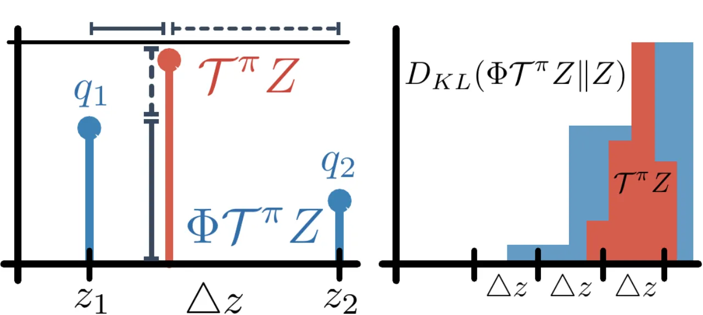
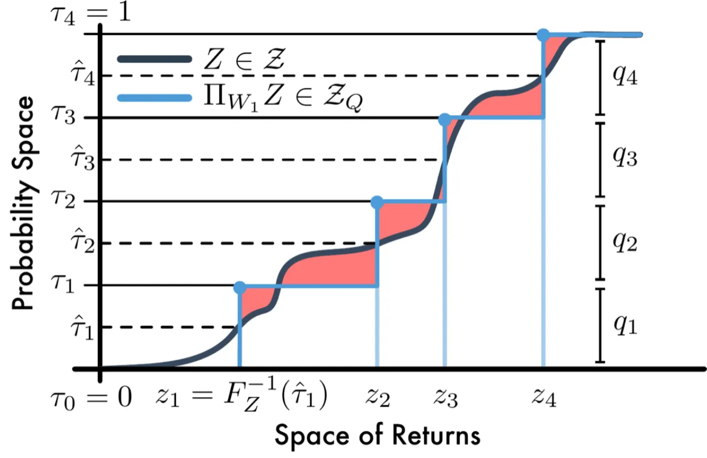
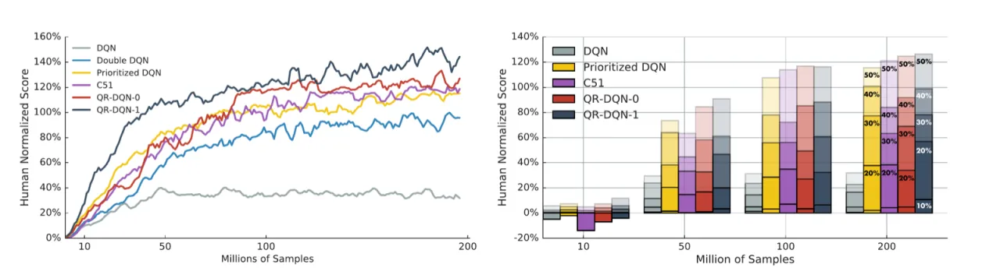
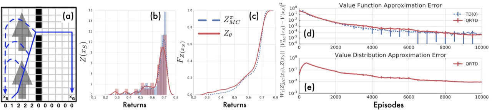

传统强化学习只学习期望回报（value function），而 QR-DQN 将 DQN 扩展为学习完整的回报分布（value distribution）：用 N 个等权重的 Dirac 分量参数化分位数分布，通过分位数回归（quantile regression）在 Wasserstein 度量下端到端优化，在理论与实践两方面均弥合了此前 distributional RL 存在的缺口。
传统的 Q-learning 将回报（return）的随机性平均掉，只估计期望值。Bellemare 等人（C51）虽然提出了分布式 Bellman 算子并证明其在 Wasserstein 度量下是收缩的，却因随机梯度无法直接最小化 Wasserstein 损失而被迫退而求其次，使用 KL 散度加上启发式投影，留下了一个理论与算法之间的缺口。
"This negative result left open the question as to whether it is possible to devise an online distributional reinforcement learning algorithm which takes advantage of the contraction result... In this paper, we answer this question affirmatively."


Wasserstein 度量（又称 Earth Mover's Distance，EMD）是分布间的积分概率度量，能够考虑不同结果之间的距离，而 KL 散度在支撑不相交时会产生问题。Lemma 3（来自 C51）已经证明分布式 Bellman 算子 Tπ 在 d̄p（最大化形式的 p-Wasserstein 度量）下是 γ-收缩的：
d̄p(TπZ₁, TπZ₂) ≤ γ · d̄p(Z₁, Z₂)
但随机梯度下降无法直接最小化 Wasserstein 损失（Theorem 1，Bellemare et al. 2017）：对于样本经验分布，期望样本损失的最优解与真实 Wasserstein 损失的最优解通常不同。因此，C51 实际用的是 KL 散度，而非 Wasserstein，导致理论与实现脱节。QR-DQN 的核心贡献是找到了一种参数化方式，使得分位数回归可以给出 Wasserstein 的无偏随机梯度。
QR-DQN 将 C51 的参数化"转置"：C51 用固定位置 + 可变概率，而 QR-DQN 用固定等概率（1/N）+ 可变位置。每个位置对应一个分位数中点，通过分位数回归以无偏随机梯度端到端最小化 1-Wasserstein 距离。
对于固定的 N，定义分位数分布为：
Zθ(x,a) := (1/N) Σi=1..N δθᵢ(x,a)
其中 δz 是在 z 处的 Dirac 质量，θᵢ 是可学习的位置参数。
分位数中点为 τ̂ᵢ = (τᵢ₋₁ + τᵢ) / 2，其中 τᵢ = i/N。
相比 C51，量化分位数分布有三大优势：
对于分位数 τ ∈ [0,1]，分位数回归损失是一种非对称凸损失，过高估计以权重 τ 惩罚，过低估计以权重 1-τ 惩罚：
LτQR(θ) = EẐ∼Z[ρτ(Ẑ - θ)]，其中 ρτ(u) = u(τ - 𝟙{u<0})
由 Lemma（w1_midpoint）可知，令 θᵢ = F-1Z(τ̂ᵢ) 即可最小化 1-Wasserstein 距离。
因此，以下目标函数的最小化等价于最小化 W₁(Z, Zθ)：
Σᵢ EẐ∼Z[ρτ̂ᵢ(Ẑ - θᵢ)]
此损失提供无偏样本梯度，可直接用随机梯度下降优化。
标准分位数回归损失在零点不光滑，可能限制非线性函数近似的性能。论文引入 Quantile Huber Loss：在 [-κ, κ] 区间内用非对称平方损失，超出区间回退到标准分位数损失：
ρκτ(u) = |τ - 𝟙{u<0}| · Lκ(u)
其中 Lκ(u) = u²/2 if |u|≤κ, else κ(|u| - κ/2)（Huber 损失）。实验中 κ=1，记为 QR-DQN-1。
论文证明（Proposition），分位数投影 ΠW₁ 与分布式 Bellman 算子 Tπ 的组合在 d̄∞ 下是 γ-收缩的：
d̄∞(ΠW₁ Tπ Z₁, ΠW₁ Tπ Z₂) ≤ γ · d̄∞(Z₁, Z₂)
这意味着组合算子存在唯一不动点，算法（及其随机近似）收敛到该不动点，且对所有 p ∈ [1,∞] 收敛。这是 distributional RL 在 Wasserstein 度量下端到端保证的首个实例。
QR-DQN 相对 DQN 有三处修改：
实验分两部分：（1）在经典的两室风格子世界（windy gridworld）上验证 QR-TD 确实学习到真实回报分布；（2）在 57 个 Atari 2600 游戏上对比 DQN、DDQN、Dueling、Prioritized Replay、C51 等 baseline，使用人类归一化得分评估。
超参数搜索结果：α = 0.00005，εADAM = 0.01/32，N = 200。以下数据来自论文 Table 1（200 million 训练帧，57 游戏）：
| 算法 | Mean (human-norm.) | Median (human-norm.) | >Human | >DQN |
|---|---|---|---|---|
| DQN | 228% | 79% | 24 | 0 |
| DDQN | 307% | 118% | 33 | 43 |
| Dueling | 373% | 151% | 37 | 50 |
| Prioritized | 434% | 124% | 39 | 48 |
| Pr. Dueling | 592% | 172% | 39 | 44 |
| C51 | 701% | 178% | 40 | 50 |
| QR-DQN-0 (κ=0) | 881% | 199% | 38 | 52 |
| QR-DQN-1 (κ=1) | 915% | 211% | 41 | 54 |

在含随机转移的两室风格子世界中，以 1K Monte-Carlo rollout 估计真实分布，运行 TD 和 QR-TD 各 10K episodes（N=32，学习率 α=0.1）。结果显示 QR-TD 正确收敛并最小化了与 MC 估计之间的 1-Wasserstein 距离，而标准 TD 仅收敛均值。

论文在 online 评估协议下得出三个关键发现：
QR-DQN 学习了完整的回报分布，但动作选择仍依赖期望值：a* = argmaxa' Ez∼Z(x',a')[z]。论文明确指出这是当前设计的限制，并提出更丰富的策略类——基于完整分布进行风险敏感决策（risk-sensitive decision making）——是重要的未来方向。
论文测试的是"纯"QR-DQN，未叠加 Dueling architecture、Prioritized Replay 等近年对 DQN 的改进。论文明确指出："A natural next step would be to combine QR-DQN with the non-distributional methods found in Table 1。"（QR-DQN 在 54 个游戏上超过 DQN，但未必在所有改进组合上达到最优。）
论文证明了 ΠW₁ Tπ 在 d̄∞ 下是收缩的，但明确指出 "the contraction property does not directly hold for p < ∞"（详见附录 Lemma）。这意味着理论保证最强在 ∞-Wasserstein 意义下成立，1-Wasserstein 下的收敛性需要额外论证。
QR-DQN 将输出层从 |A| 扩展到 |A|×N，且损失对所有 N² 对 (θᵢ, TΘⱼ) 求和，计算与内存成本均随 N² 增长。最优 N=200 是通过在五个训练游戏上超参数搜索得到的，增加了调参代价。